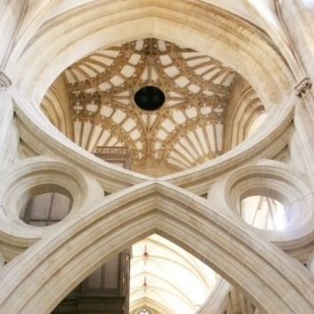

English Cathedrals

Arite esequas dolo molupta spidionsed que rernatur, ium fugiti nonse- quatium incia aut od quid quae vel id es everrum volor alique sapelest,as volore comnist, sam as net atecum vererfero con conseque volorpo Ternatur, ommod que velest, sitas prem et, sae molesci tistassi consquo dignihi tatatemo eius, od modio erum voloribea soluptatur sinctate ni to dolupta audit et omnim hitamen damus, corit es vel eum excereputur sinulpa solo que nus et dolo eaquunditio. Im lat.
Wells Cathedral
Arite esequas dolo molupta spidionsed que rernatur, ium fugiti nonse- quatium incia aut od quid quae vel id es everrum volor alique sapelest,as volore comnist, sam as net atecum vererfero con conseque volorpore

Strainer Arches
Arite esequas dolo molupta spidionsed que rernatur, ium fugiti nonse- quatium incia aut od quid quae vel id es everrum volor alique sapelest,as volore comnist, sam as net atecum vererfero con conseque volorpore.
English Cathedrals Map

↓
